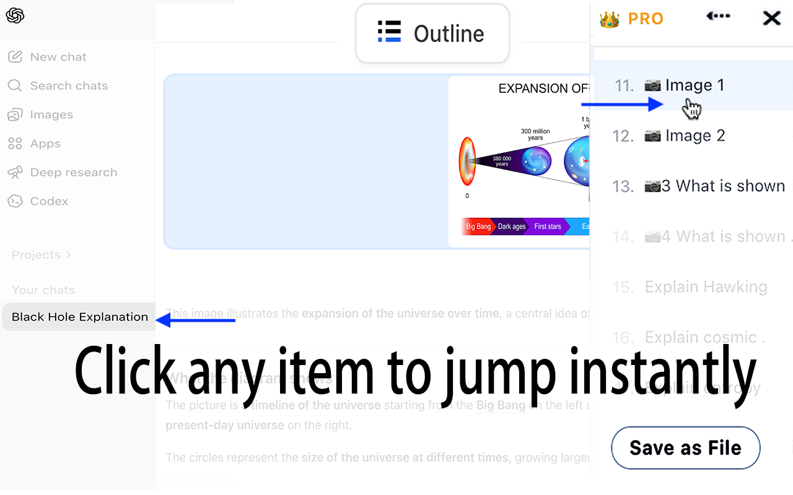

Clickable outline for 200+ message conversations
One click generates a full table of contents from any ChatGPT or Gemini conversation. Works on threads of any length—200 messages or more.
Automatically build a clickable outline for long ChatGPT and Gemini conversations. Jump to any message instantly, bookmark what matters, and export with structure intact.
You ask ChatGPT or Gemini a question. You follow up. You dig deeper. Before you know it, the conversation is 150 messages long—and the one answer you need is buried somewhere in the middle. You scroll. You search. You give up and re-ask the question.
Outline fixes this. It automatically builds a clickable directory of your entire conversation. Find any message in one click. Bookmark the ones worth keeping. Export them before they disappear into chat history.
One click generates a full table of contents from any ChatGPT or Gemini conversation. Works on threads of any length—200 messages or more.
Click any item in the outline. The page scrolls directly to that message. No more endless scrolling through hundreds of replies.
Mark the specific Q&A turns worth keeping. Free users get 5 bookmarks per session; Pro users get unlimited. Revisit your bookmarks anytime.
Send conversations to Inbox and the directory structure stays. Jump between messages inside Inbox just like in the original chat. No other export tool does this.
Export full conversations or only bookmarked Q&As as clean Markdown files. Works with or without Inbox.
All page content stays in your browser. Nothing is uploaded to any server. The extension works offline after activation.
Video playback is unavailable here. Showing a product screenshot instead.

All plans include unlimited directory jumping for both ChatGPT and Gemini. Pro adds unlimited bookmarks, exports, and Inbox AI summaries.
Full directory navigation for ChatGPT and Gemini.
Good for regular AI users who want reliable navigation, basic bookmarks, and occasional exports.
$9.99/year $19.99/year
Everything in Free, plus unlimited bookmarks, exports, and AI summarization.
Pay once for annual access. This is not a recurring subscription, so there is no surprise renewal to cancel later.
Best for serious research, writing, coding, and recurring knowledge review.
New users get a 7-day Pro trial. During the trial, Pro limits apply to outline navigation, bookmarks, and exports.
It automatically generates a clickable table of contents for long ChatGPT and Gemini conversations, so you can jump to any message, bookmark key Q&As, and export what matters. Works on 200+ message threads.
Yes. Outline works with both ChatGPT and Gemini in Chrome and Chromium-based browsers. There is no limit on Gemini directory jumping.
You receive an activation code by email (e.g. XXXX-XXXX-XXXX). Enter it in the extension to activate. You only need internet for the first activation—it runs locally offline after that. Re-activation is allowed during the license period.
WeChat Pay can complete asynchronously, so the success page may take a few minutes to update. Please allow about 15 minutes for the payment status to sync. The activation code email can also be delayed—if you haven’t received it after 20 minutes, contact support@wisteriasoftware.uk.
Yes. New users get a 7-day Pro trial with full Pro limits on navigation, bookmarks, and exports. Gemini directory jumping is unlimited during the trial.
No. Internet is only required for first activation. After that, the extension works entirely offline.
Both plans include unlimited directory jumping for ChatGPT and Gemini. Free gives you 5 bookmarks per session and 5 exports per month. Pro unlocks unlimited bookmarks and exports, plus Inbox AI summaries (with your own API key). See the pricing table above for a full comparison.
No. All page content is processed locally in your browser. Nothing is uploaded to any server. The extension works offline after activation and does not send your conversation data anywhere.
Yes. Bookmark the Q&As you want to keep, then export only those sections to Markdown or Inbox—no need to export the entire conversation.